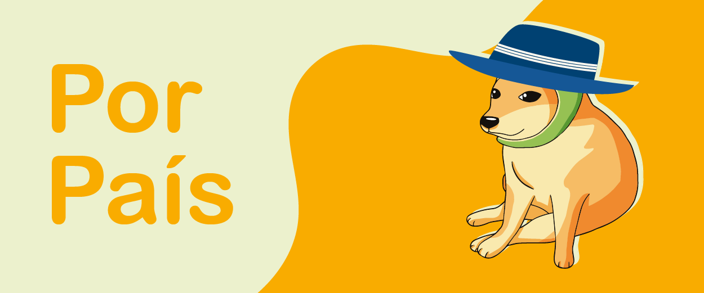
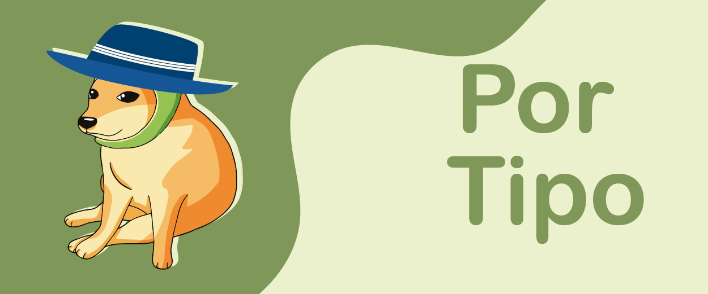
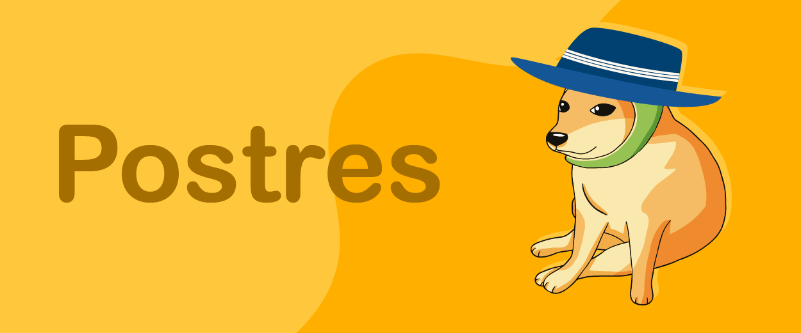
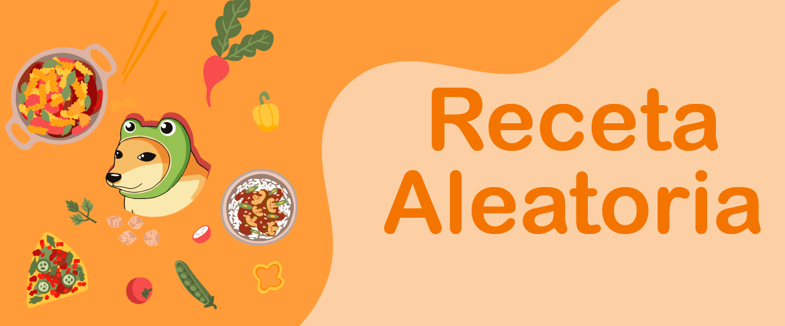
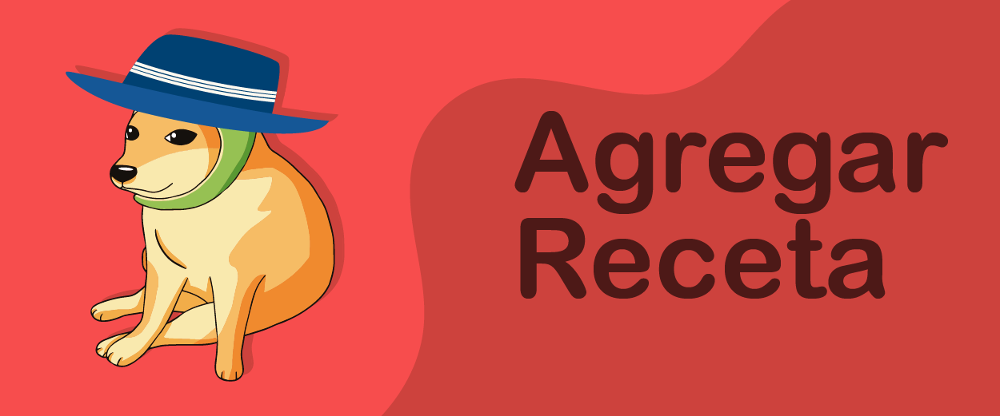
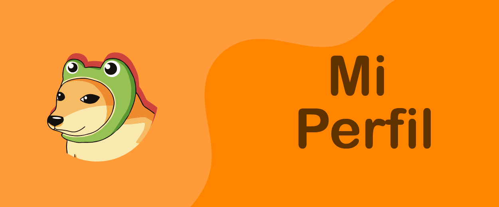

Seleccione su categoría :D
¿Te apetece probar algo delicioso? Descubre nuestros platos en la aplicación y elige tu favorito para disfrutar en casa. ¡Buen provecho!






¿Te apetece probar algo delicioso? Descubre nuestros platos en la aplicación y elige tu favorito para disfrutar en casa. ¡Buen provecho!